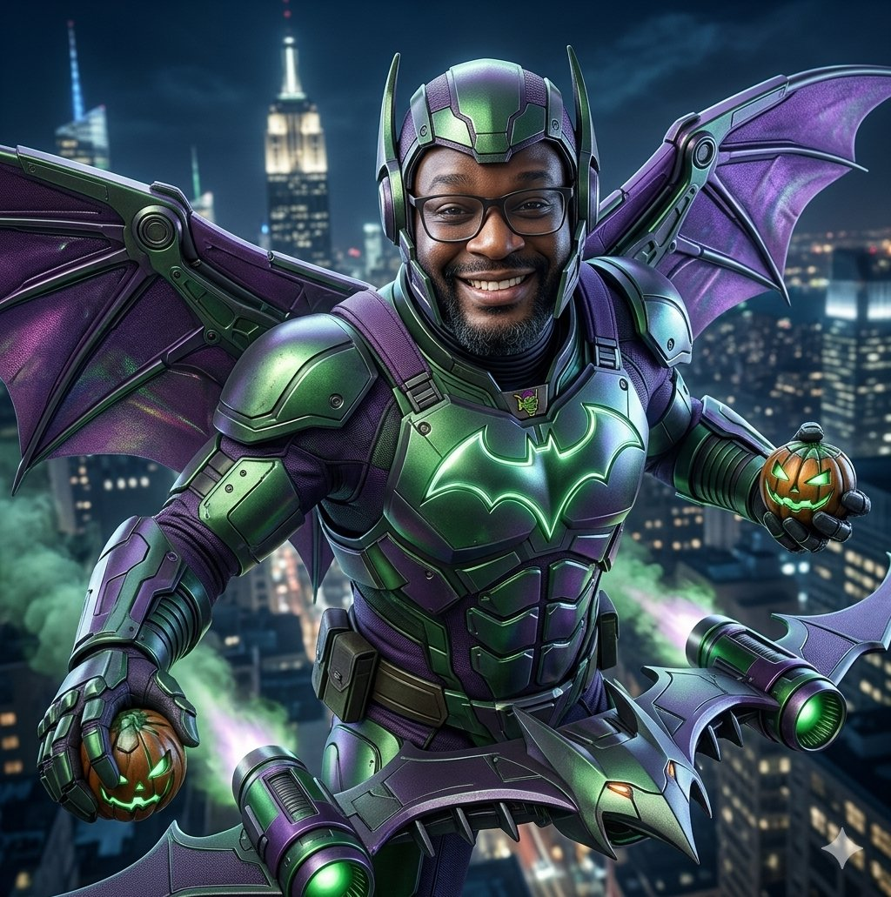

Professor misterioso é apontado como novo Duende Verde de Manhattan
Publicado em 03 de setembro de 2026 por Peter Parker
Esta matéria é fictícia e humorística.

Moradores de Manhattan afirmam ter presenciado uma cena inacreditável na manhã desta terça-feira: um suposto novo Duende Verde foi visto cruzando os céus da cidade em uma espécie de planador improvisado, carregando uma mochila, um apagador e uma expressão de quem claramente estava irritado com trabalhos entregues fora do prazo.
Segundo testemunhas, o suspeito vestia roupas formais e gritava frases como “quem não fez a lição vai enfrentar as consequências!” e “essa prova surpresa vale dez pontos!”.
O episódio causou correria em uma avenida próxima ao Clarim Diário, onde vendedores ambulantes relataram que abóboras explosivas foram substituídas por bolas de papel amassadas e giz atirado com precisão assustadora.
Caos acadêmico toma conta da cidade
A confusão aumentou quando o suposto vilão pousou no alto de um prédio e passou a exigir silêncio absoluto da população.
Testemunhas afirmam que ele ameaçou aplicar recuperação imediata em qualquer cidadão que estivesse conversando durante sua “explicação do plano maligno”.
Em poucos minutos, estudantes de toda a região começaram a reconhecer o rosto do suspeito e levantaram uma teoria chocante: o novo Duende Verde seria, na verdade, um professor muito conhecido, que teria enlouquecido após corrigir pilhas intermináveis de atividades.
Homem-Aranha tenta intervir
Fontes não confirmadas dizem que o Homem-Aranha apareceu no local para conter a ameaça, mas teria recuado ao ouvir a frase: “você também vai entregar esse relatório até sexta!”.
O herói, segundo rumores, desapareceu rapidamente entre os prédios e ainda não comentou o caso.
Apesar do susto, ninguém ficou ferido. O maior prejuízo registrado até o momento foi a queda misteriosa de várias folhas de exercícios sobre os carros estacionados, além de um outdoor com a frase: “estudem para a prova final”.
Voltar para a página inicial